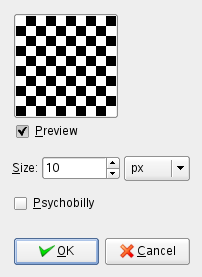

Figure 17.297. Example for the Checkerboard filter
Filter “Checkerboard” applied
Psychobilly “Checkerboard”
This filter creates a checkerboard pattern replacing the current layer
content. Colors used for pattern are current Fore- and Back ground
colors of toolbox.
13.8.2. Starting filter
You can find this filter in the image menu through
Filters → Render → Pattern → Checkerboard
13.8.3. Options
Figure 17.298. “Checkerboard” filter options

Size
With this option, you can set checkerboard square size, in
pixels, or in your chosen unit by using the drop-down list.
Psychobilly
This option gives an eiderdown look to the Checkerboard.